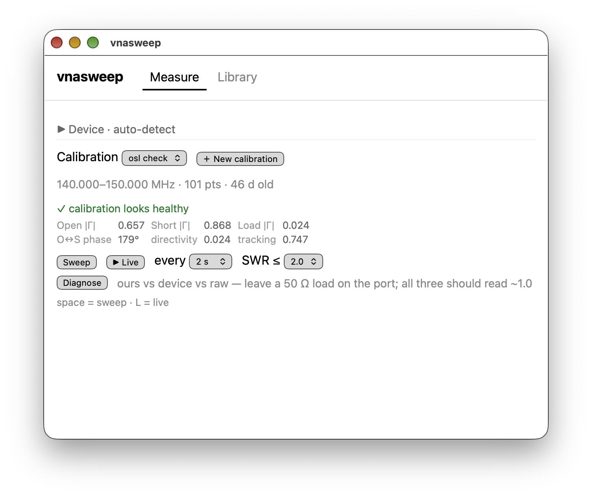

A small desktop app for the NanoVNA. It calibrates, sweeps SWR and compares traces, and does nothing else.

The stock software and NanoVNA-Saver can do much more. vnasweep does this one job well.
A 3-step Open, Short, Load wizard. A health check finds a swapped or loose standard.
One sweep or live sweeps. A marker shows minimum SWR, R ± jX and return loss. Amateur bands are shaded.
Name a reading. Show several on one plot, or the difference between two.
Plot the app's correction, the device's correction and the raw data together.
Open them in other tools, diff them, and keep them in git. There is no account and no telemetry.
~/vnasweep/ cals/ 2m-dipole.json # span, points and the raw O/S/L captures readings/ 2m-dipole-may.s1p # Touchstone S11, RI format 2m-dipole-may.json # name, date and calibration
Sweep once.
Start or stop live sweeps.
Bandwidth at each SWR limit, shown for every sweep.
Tested with firmware 1.2.27 on macOS.
Downloads are on the latest GitHub release.
Open the .dmg (Apple Silicon) and drag vnasweep into Applications. The app is not notarised yet, so allow it in Privacy & Security, or run:
xattr -dr com.apple.quarantine \ /Applications/vnasweep.app
Use the .deb or the .AppImage. To use the NanoVNA without root, join the dialout group (uucp on Arch).
sudo usermod -aG dialout $USER
You need Rust from rustup. The Nix flake and direnv supply just and Node.js.
git clone https://github.com/zpeters/vnasweep cd vnasweep && just tauri-dev